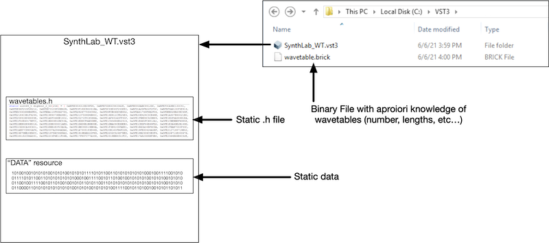

A key design feature in SynthLab is the use of generic interface classes that allow you to customize things that are programmer-centric (or perhaps company-centric) such as storing wavetables and PCM samples. The IWavetableSource and IWavetableDatabase objects are written so that the modules and cores have no information about how the data is stored. The IWavetableSource interface is below. You can see that its functions do not allow any kind of access to the underlying table itself. Think about how you will want to assembly your wavetable source object so that it conforms not only to this interface but also your own method for storing or creating the tables themselves. b
When each wavetable core is reset, it queries the database to see if its tables exist or not. If a table does not exist, the core provides the IWavetableSource pointer for the database to store. The upshot of this is that the very first core of a given kind will register fresh tables with the database. After that, the other cores will find them, and not attempt to register them.
When the wavetable core is updated as part of the render operation, it will acquire a IWavetableSource pointer from the database and use it for all rendering. Many cores may be sharing access to the same table source. But the IWavetableSource interface only allows the core to call a function on it to read and interpolate the tables. This means that no core will ever have access to the tables themselves, only to a function that will read the table for them. Likewise, the cores do not control the lifecycles of the wavetable sources as they cannot create or destroy the tables.
Static Wavetables
Static wavetables are data arrays that are pre-initialized with their proper values. Figure 1 below shows three examples of static wavetable setups:
- wavetables are compiled into the plugin from a .h file or other editable source code file
- wavetables are compiled into the plugin with a binary data resource; a pre-assembled block of data that is added to the compiler project as a resource
wavetables in a datafile (in a known location) and apriori (advance) knowledge of the maximum number of tables, their lengths or other information needed to establish a static connection with the data

SynthLab comes with three objects subclassed from IWavetableSource specifically for static sources; all of these may operate on one-shot or looping wavetables:
- SineTableSource: includes one and only one table - a sinusoid
- StaticTableSource: for pitched wavetables
- DrumWTSource: for unpitched tables
There are several static wavetable cores provided as examples:
- ClassicWTCore: uses a StaticTableSource for each waveform
- MorphWTCore: uses a set of StaticTableSources, organized as a bank, up to 16 waveforms in size
- DrumWTCore: uses a DrumWTSource for each one-shot drum table
When examining the sample projects, notice where the statically declared wavetable sources are located for each oscillator core:
- ClassicWTCore: declares the array of sources as a member
- MorphWTCore: uses a set of StaticTableSources, declared as an array of sources for each wavetable bank structure (see MorphBankData) - the MorphWTCore owns a set of 16 MorphBankData structures, one for each of its 16 bank names
- DrumWTCore: declares the array of sources as a member
Static Wavetables in Data Files
If you plan on storing tables in a datafile (brick) on the drive somewhere, you will have a few decisions to make about how and when you access them and how you plan on creating the IWavetableSource object that will register with the database. These are going to also be very programmer-centric (or company-centric) chores. If you know before-hand (at compile time) how the file is arranged along with the number and sizes of the tables, then you can consider this to be a static wavetable implementation as you can pre-allocate the IWavetableSource objects statically. How you setup the datafile accesses and read operations will be up to you, but the underlying module cores will only be able to call the IWavetableSource functions and the data will need to be available for them.
If you do not know the contents or other "maximum" information about the data file at compile time, then you will need to use a dynamic wavetable system.
Dynamic Wavetables
Dynamic wavetables are data arrays that are created dynamically at or after instantiation time for the plugin. SynthLab includes a dynamic wavetable core named FourierWTCore that synthesizes a parabola waveform during the reset operation and whose harmonic content is related to the sample rate. This core uses the DynamicTableSource object that is designed for holding a std::shared_ptr<double> that is created during the reset operation. I am using a smart pointer here so I don't need to worry with dynamic allocation lifecycles, but you may certainly use new/delete.